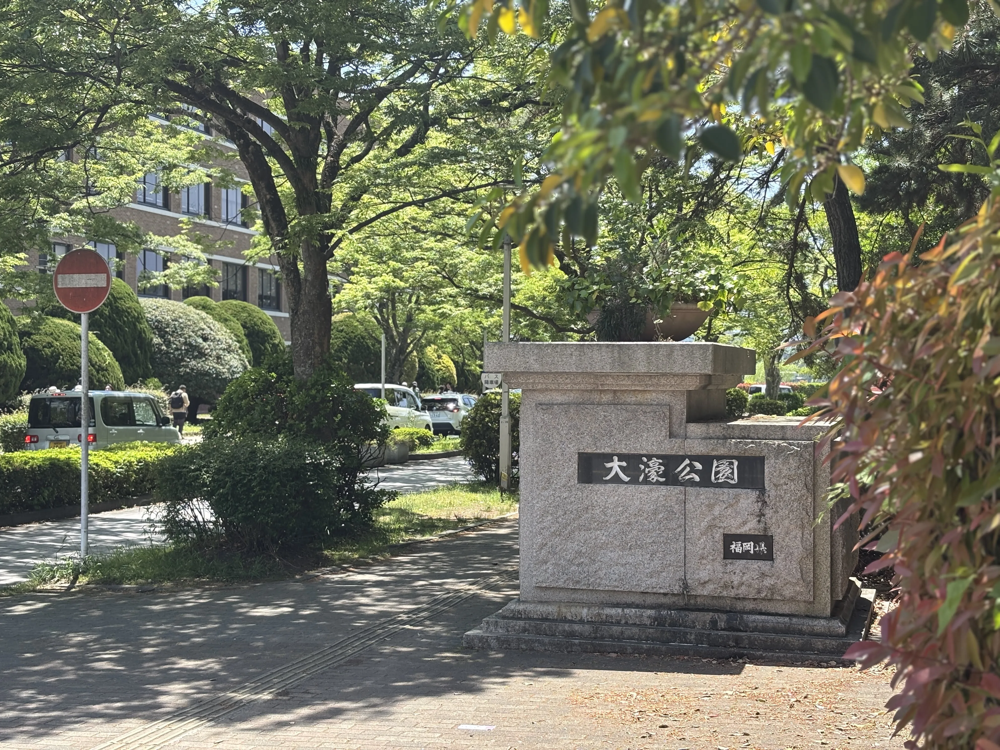

ラブライブ！スーパースター!! Liella! 6th LoveLive! Tour Let's be ONE 福岡公演 / ひよこニキのホームページ
ラブライブ！スーパースター!! Liella! 6th LoveLive! Tour Let's be ONE 福岡公演に参加しました。
1日目。
福岡へは飛行機を使う人が大半ですが、今回はGWという事もあり値段が相当上がっていた為新幹線で向かう事に。
新横浜駅。
？「ｼｬｰｲｸｿﾞ-!!ﾀｲｶﾞｰ!!ﾌｧｲﾔｰ!!ｻｲﾊﾞｰ!!ﾌｧｲﾊﾞｰ!!ﾀﾞｲﾊﾞｰ!!ﾊﾞｲﾊﾞｰ!!ｼﾞｬｰｼﾞｬｰ!!!」
希実…のぞみだよ。
希実…11分延発だよ…のぞみ…。
という事でGWという事もあり新幹線にしては珍しく遅延。
今回は指定席。普段はグリーン車ですが、GW期間中は早割が使えないのと距離が距離なのでという訳ですね。
隣の人は新大阪駅で下車。新大阪駅までも相当車内が煩かったのですが、新大阪駅から博多駅まで子連れの方々が乗車してきて…。
挙げ句の果に他の人とその子連れの人達でトラブルになりそう…。という事で車掌長さんにお願いをし号車を変えて貰いました。単純に煩さに耐えられなかったというのもありますが…。
今後「絶対に」グリーン料金はケチらないと心に誓いました…。
17分延着で博多駅。
駅でヲタク達が待っていてくれたので宿に荷物を預けタクシーで会場へ。
肝心の内容ですが良すぎました。
まず座席ですが、センターステージ真横。しかもトロッコからも近い。
多分座席に関しては今までで一番レベルで良かったのではないでしょうか。
そして！なんと！推しの伊達さゆりさんから爆レスを貰いました。
トロッコで僕の居るブロックの真横を通ってくれまして、特大ハートを貰いました…。
満足。感謝。

2日目。日曜日なのでプリキュアを見ます。ホテルですが構わず大きな声を出して応援しましょう。
？「ぷいきゅあー！！」
（冗談ですよ、節度を持って応援しましょう。）
会場へ向かう前に寄り道。まずは駅ビルで行われている展示を見ます。
その後は地下鉄に乗って大濠公園へ。
本当はスターバックスへ行こうと思っていたのですが、想像以上に混んでいたので散歩のみに。
会場着。ゆいがおー。
1日目から分かっていた事ですが2日目の座席もかなり良かったです。
1日目の座席の5列程前、センターステージ前方横といった所。
前からは15列ぐらいという良い席でした。
そして！なんと！なんとなんと！推しの伊達さゆりさんからレスを3回も貰ってしまいました…。
3回ですよ…。今回のツアーでレスを全然貰っていなかった理由はここにあるのでしょうか…。以下詳細。
1回目は「シェキラ☆☆☆」にてトロッコで反対を向いた伊達さゆりさんが来た際に。
反対を向いていたので僕はレスを貰えないだろうなと思いペンライトをピンクにして振っていたのですが、伊達さゆりさんが振り返ると同時に僕に目線をくれました。
僕は驚いてペンライトの色を変えられず全力で手だけ降っていました。
2回目。「シェキラ☆☆☆」の終盤のセンターステージに向かってペンライトを振っている所を気づかれ、レスを貰いました。「そうそう君！」みたいなね。
3回目。最後の挨拶のパートで配信への挨拶が終わりステージ中央へ戻る際にペンライトでハートを作っていた所を気づかれ、ハートを貰いました。
前述の通り、そこそこメインステージからは遠かったですが、気づかれて何より。
いっぱいレスを貰いました。可愛かったな、さゆりん。
会場を出るとまだ日が沈みきっていなかったですね。
博多駅まで戻るヲタクをタクシーに乗り宿へ。
アドレナリンが出ていた体の力が抜け、僕は風呂から上がってご飯も食べずに2分で寝てしまいました…。結局夜中2時ぐらいに一度起きたのですが…。
3日目。
散歩をする事に。
博多の街も散歩しました。商店街とかね。
予定よりも早く博多駅へ。
さくら。
希実…かつてのぞみだった新幹線だよ…。
早く博多駅に来た理由は500系新幹線に乗車する為。
この新幹線はかつてのぞみで運用されていたもの。
全電動車、のぞみ運用時には18,240kw（W1編成）、均衡速度349km（10‰時）という性能を誇っていました。
現在は8両に改造され新大阪博多駅間でこだまとして運用されています。
再来年にはこの500系は姿を消してしまうという訳で鉄道ヲタクでも無いですが折角乗れるのであれば乗ろうという事ですね。
今回乗車する区間は博多駅から博多南駅。詳しい事は調べてみて欲しいのですが、往復600円で乗れる区間ですね。
車内の様子。
因みに6号車は元グリーン車なので快適。尚、博多南線は全席自由席なので追加料金もいらないそう。
博多南駅に到着。
技術の結晶ですね。
その後博多駅に戻り、一度改札の外へ出て、再び改札内へ。
さらば博多！
さゆり…のぞみ…さくらだよ…。
希実…のぞみだよ…のぞみ。
帰りの新幹線も指定席だったのですが、帰りは特にトラブルも無く帰れました…。
という事で計2日間で10時間近く新幹線に乗車。伊達さゆりさんに4回もレスを貰い行って良かったなと思いました。
HiyokoNiki All Rights Reserved.